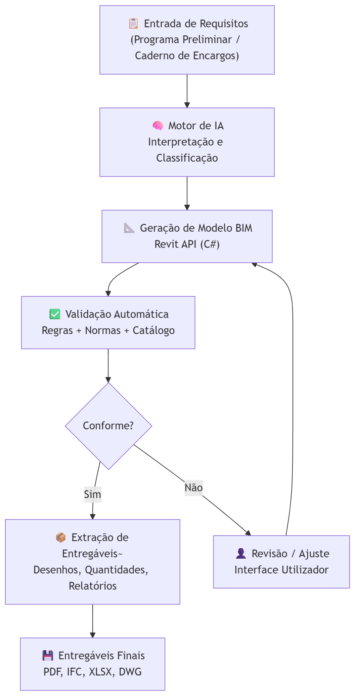
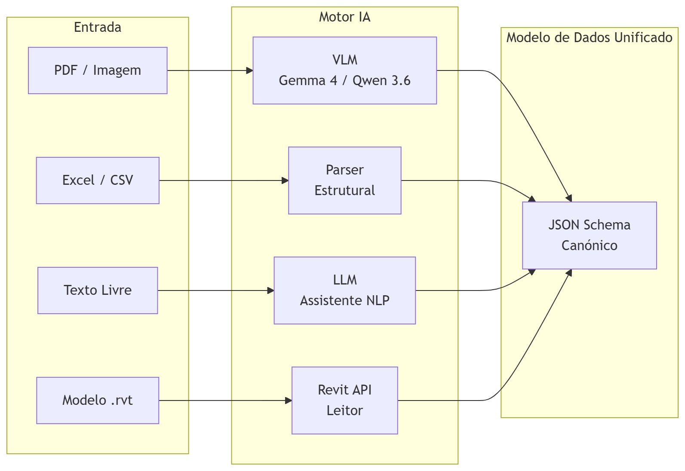
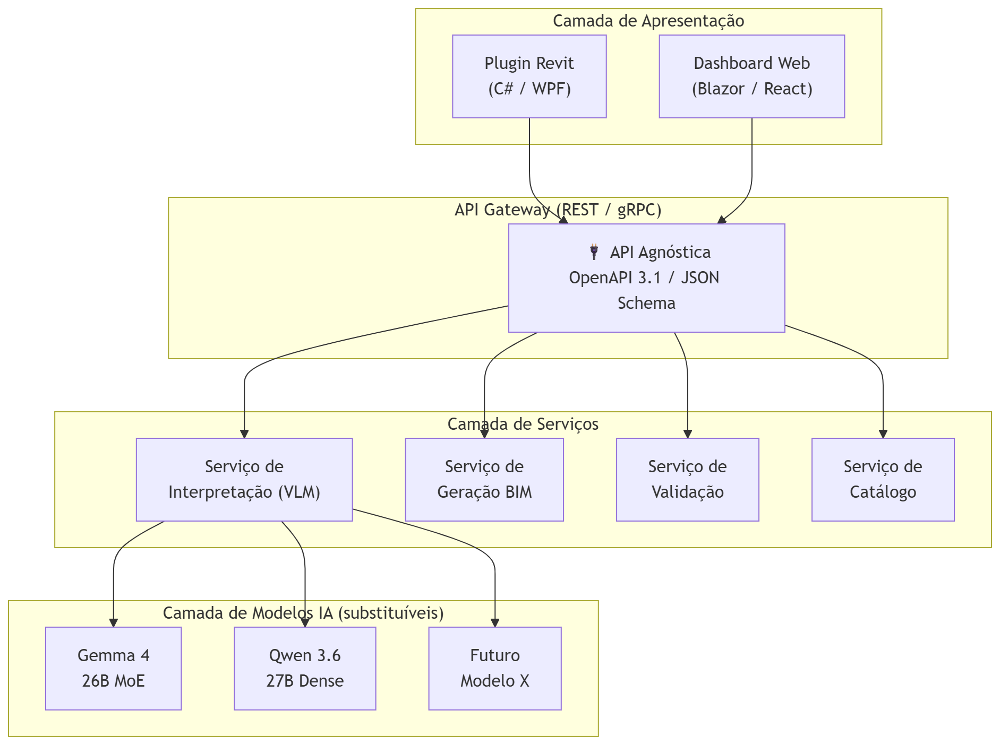
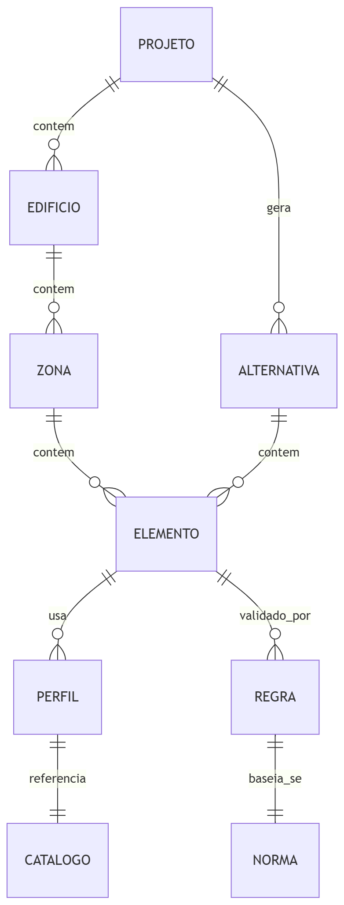
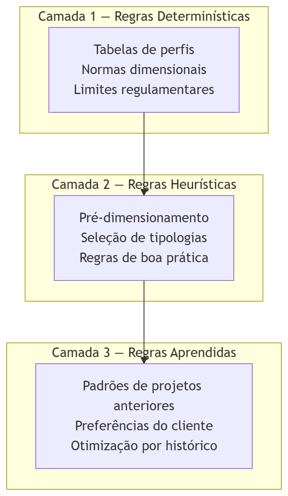
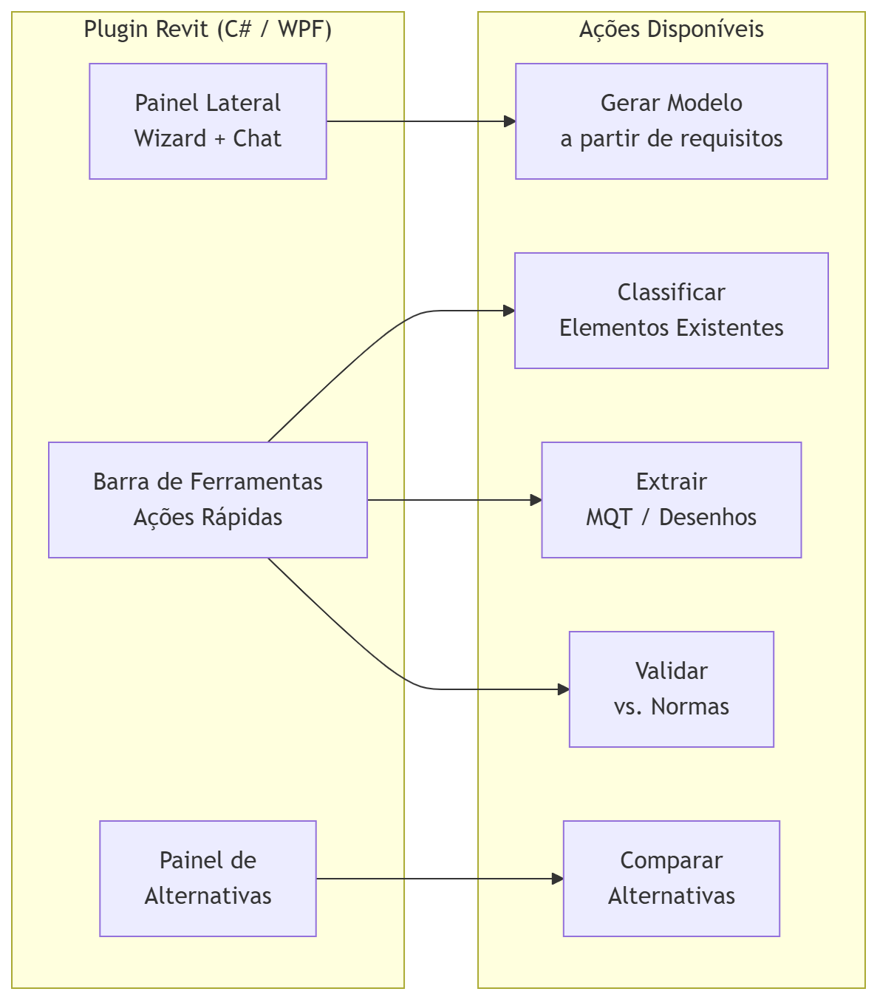

GETGAIN Solutions
Automação BIM com IA — Visão Técnica
2026-04-26
Agenda
Esta apresentação responde aos 4 pontos solicitados pela Norton:
- Fluxo de trabalho — desde a entrada de requisitos até à extração de entregáveis
- Modelo de dados e API — comunicação com a API e independência tecnológica
- Digitalização de regras e catálogo de soluções — dentro do motor de automação
- Experiência do utilizador — interação com as ferramentas de automação
Complementa a apresentação de portfólio IA da GETGAIN, onde se detalham os projetos de referência e a estratégia anti-alucinação.
1. Fluxo de Trabalho
Desde a entrada de requisitos até à extração de entregáveis
Fluxo de Trabalho — Visão Geral

Entrada de Requisitos — Como funciona
O sistema aceita requisitos de múltiplas formas, adaptando-se ao workflow existente da Norton:
- 📄 Documentos digitalizados — PDFs de programas preliminares, cadernos de encargos, especificações de cliente. O VLM (Gemma 4 / Qwen 3.6) extrai dados estruturados automaticamente.
- 📊 Ficheiros estruturados — Excel/CSV com parâmetros (vãos, cargas, tipos de perfil, áreas). Importação direta sem OCR.
- 💬 Linguagem natural — O utilizador descreve o que precisa em texto livre (ex: “pavilhão logístico 40×80m, 3 naves, cobertura deck, pé-direito 10m”). O LLM interpreta e gera os parâmetros.
- 🏗️ Modelo Revit existente — Importação de .rvt para enriquecimento, classificação automática ou geração de alternativas.
Processamento pelo Motor de IA

Independentemente da entrada, o resultado é sempre um JSON Schema canónico — o formato interno que alimenta todas as operações seguintes.
Extração de Entregáveis
A partir do modelo BIM gerado/atualizado, o sistema extrai automaticamente:
Documentação Técnica
- 📐 Desenhos de vistas (plantas, cortes, alçados) — geração automática via Revit API
- 📋 Mapas de Quantidades de Trabalho (MQT)
- 📊 Comparativo de alternativas (custos, quantidades, pesos)
- 📄 Memória descritiva gerada por LLM com base nos parâmetros do modelo
Formatos de Saída
| Entregável | Formato |
|---|---|
| Desenhos técnicos | PDF / DWG |
| Modelo BIM | RVT / IFC |
| Quantidades | XLSX |
| Relatórios | PDF / DOCX |
| Dados estruturados | JSON / XML |
2. Modelo de Dados e API
Comunicação com a API e independência tecnológica
Arquitetura — Independência Tecnológica

Independência Tecnológica — Princípios
🔄 Modelos substituíveis sem alterar o sistema
A API comunica com os modelos de IA através de uma camada de abstração. Se amanhã surgir um modelo melhor que o Gemma 4 ou o Qwen 3.6, basta trocar o adaptador — o resto do sistema (API, Revit plugin, validação, catálogo) não muda.
📐 Contrato de dados via JSON Schema
Todos os serviços comunicam através de schemas JSON versionados. O modelo de IA recebe um prompt estruturado e devolve um JSON validado contra o schema — nunca texto livre. Isto garante interoperabilidade entre componentes.
🏠 100% On-Premise
Toda a infraestrutura corre dentro do perímetro da Norton. Os modelos são open-source (Apache 2.0) e correm em hardware local. Sem dependência de APIs cloud, sem subscrições, sem envio de dados para fora.
Gemma 4 e Qwen 3.6 — Porquê estes modelos?
Gemma 4 (Google DeepMind)
- 🏷️ Licença: Apache 2.0
- 🧠 26B MoE — 3.8B parâmetros ativos por token
- 📄 OCR e document parsing nativos — DocVQA, ChartQA
- 📐 Token budget variável (70–1120 por imagem) — ajustável por tarefa
- ⚡ Function calling nativo com JSON estruturado
- 💾 24GB VRAM (RTX 3090/4090)
- 🔧 Contexto: 256K tokens
Qwen 3.6 (Alibaba)
- 🏷️ Licença: Apache 2.0
- 🧠 27B Dense — todos os parâmetros ativos
- 📄 Visão multimodal unificada — text + image early fusion
- 📐 Thinking Preservation — mantém cadeia de raciocínio
- ⚡ 77.2% SWE-bench — forte em código (Revit API)
- 💾 18GB VRAM — corre em GPUs mais acessíveis
- 🔧 Contexto: 262K nativo, extensível a 1M tokens
Estratégia: Ambos os modelos correm on-premise. O sistema seleciona automaticamente o melhor modelo por tarefa — Gemma 4 para OCR/documentos, Qwen 3.6 para raciocínio e geração de código Revit.
Modelo de Dados — Estrutura

O modelo de dados é agnóstico ao Revit — funciona como representação intermédia que pode alimentar qualquer plataforma BIM (Revit, Tekla, ArchiCAD) ou exportar para IFC.
3. Digitalização de Regras e Catálogo
Como são estruturadas as regras e o catálogo de soluções dentro do motor de automação
Catálogo de Soluções — Estrutura
O catálogo é a base de conhecimento do motor de automação. Contém as soluções construtivas, perfis, tipologias e regras de negócio da Norton, digitalizadas e versionadas.
Tipologias Construtivas
- Estruturas primárias (pórticos, treliças)
- Estruturas secundárias (madres, contraventamento)
- Tipos de cobertura (deck, sandwich, fibrocimento)
- Tipos de fachada (painel sandwich, betão, mista)
- Fundações (sapatas, lintéis, estacas)
Cada tipologia tem parâmetros configuráveis e regras de aplicabilidade.
Catálogo de Perfis
- Tabelas de perfis: HEB, HEA, IPE, HEM, UPN, L, tubulares
- Propriedades mecânicas: Iy, Iz, Wy, Wz, A, peso/m
- Regras de seleção por vão, carga e tipo de elemento
- Fornecedores preferenciais e prazos de entrega
Todos os dados são verificáveis — o sistema valida que “HEB 300” corresponde às dimensões corretas na tabela.
Digitalização de Regras — Abordagem
As regras são digitalizadas em 3 camadas progressivamente mais complexas:

Camada 1 — Regras Determinísticas
Regras que não admitem interpretação — são factuais e verificáveis.
- ✅ Tabelas de perfis metálicos (dimensões, pesos, propriedades)
- ✅ Regulamento de Estruturas de Aço (Eurocódigo 3)
- ✅ Limites de deformação (L/200, L/250, L/300 conforme uso)
- ✅ Classes de exposição e proteção ao fogo
- ✅ Distâncias mínimas (pilares a empenas, eixos modulares)
Camada 2 — Regras Heurísticas
Regras de pré-dimensionamento e boa prática usadas na Norton — digitalizadas a partir do know-how da equipa.
- ✅ “Para vãos até 20m, pórtico simples em HEB; acima de 20m, considerar treliça”
- ✅ “Madres de cobertura IPE ou perfil enformado a frio, espaçamento 1.5–2.5m”
- ✅ “Contraventamento em Cruz de St. André para naves até 3 módulos”
- ✅ “Cobertura deck para vãos > 25m; sandwich até 15m”
Camada 3 — Regras Aprendidas
Regras que emergem da análise de projetos anteriores da Norton e das preferências acumuladas.
- ✅ Padrões recorrentes: tipologias mais usadas por tipo de cliente/região
- ✅ Desvios sistemáticos: “a equipa tende a sobredimensionar pilares de empena em 10%”
- ✅ Preferências de fornecedor por tipo de perfil e região geográfica
Como funciona sem histórico digital?
Na Fase 0, fazemos o levantamento dos padrões com a equipa da Norton:
- Selecionamos 10–15 projetos representativos
- Digitalizamos as decisões-chave de cada um
- O sistema identifica padrões recorrentes
- Os padrões são validados pela equipa antes de serem ativados
A Camada 3 cresce organicamente — cada projeto novo alimenta a base de conhecimento.
4. Experiência do Utilizador
Interação com as ferramentas de automação
Modos de Interação
O sistema oferece 3 modos de interação, adaptados ao perfil de cada utilizador:
🖱️ Modo Guiado
Para: Utilizadores menos experientes
Wizard step-by-step dentro do Revit:
- Tipo de edifício
- Dimensões e geometria
- Cargas e condições
- Seleção de tipologia
- Geração e revisão
Interface com dropdowns, sliders e previews 3D — sem necessidade de conhecer o Revit em profundidade.
💬 Modo Conversacional
Para: Engenheiros experientes
Chat integrado no Revit:
- “Gera um pavilhão 40×80, 3 naves, HEB”
- “Compara deck vs sandwich para esta cobertura”
- “Adiciona contraventamento à nave central”
- “Exporta MQT desta alternativa”
O LLM interpreta, executa via Revit API e mostra o resultado — linguagem natural → ação BIM.
Interface — Plugin Revit

Feedback e Transparência
O sistema é transparente em todas as decisões — o utilizador nunca recebe um resultado “caixa negra”.
📋 Rastreabilidade de decisões
Cada elemento gerado inclui um log de decisão: que regra foi aplicada, que perfil foi selecionado, porquê, e qual seria a alternativa. O utilizador pode aceitar, rejeitar ou ajustar.
⚠️ Níveis de confiança
O sistema indica o nível de confiança de cada extração/decisão:
| Nível | Significado | Ação |
|---|---|---|
| 🟢 Alta | Regra determinística aplicada | Aceite automático |
| 🟡 Média | Regra heurística + validação | Revisão recomendada |
| 🔴 Baixa | Sem regra aplicável / ambiguidade | Decisão humana obrigatória |
🔄 Aprendizagem com feedback
Cada decisão validada ou corrigida pelo utilizador alimenta a Camada 3 de regras — o sistema melhora com o uso.
Resumo — Os 4 Pontos
1. Fluxo de Trabalho
Entrada multi-formato (PDF, Excel, texto, .rvt) → Motor de IA com VLMs (Gemma 4, Qwen 3.6) → JSON Schema canónico → Revit API → Entregáveis (PDF, IFC, XLSX, DWG).
2. Modelo de Dados e API
Arquitetura em camadas com API REST agnóstica. Modelos de IA substituíveis sem alterar o sistema. JSON Schema versionados como contrato. 100% on-premise, Apache 2.0, sem dependência cloud.
3. Regras e Catálogo
3 camadas: determinísticas (tabelas/normas em YAML), heurísticas (regras if/then editáveis), aprendidas (padrões de projetos). Fase 0 com levantamento de 10–15 projetos representativos.
4. Experiência do Utilizador
3 modos (guiado/conversacional/paramétrico). Plugin Revit com painel lateral + chat + ações rápidas. Transparência total com logs de decisão e níveis de confiança.
Próximos Passos
Roadmap proposto
- Reunião técnica — alinhar requisitos detalhados com equipa GTEC
- Fase 0 — Diagnóstico (3 semanas): levantamento de 10–15 projetos, digitalização do catálogo base, setup da infraestrutura
- Fase 1 — Quick wins (3 meses): primeiros 5 módulos operacionais com resultados demonstráveis
- Proposta técnica e comercial detalhada após a reunião
Contacto
Gustavo Reis — Diretor de I&D
gustavo.reis@getgainsolutions.com
GETGAIN Solutions, Lda. — Marinha Grande, Portugal

GETGAIN Solutions, Lda. — Confidencial — Norton Edifícios Industriais